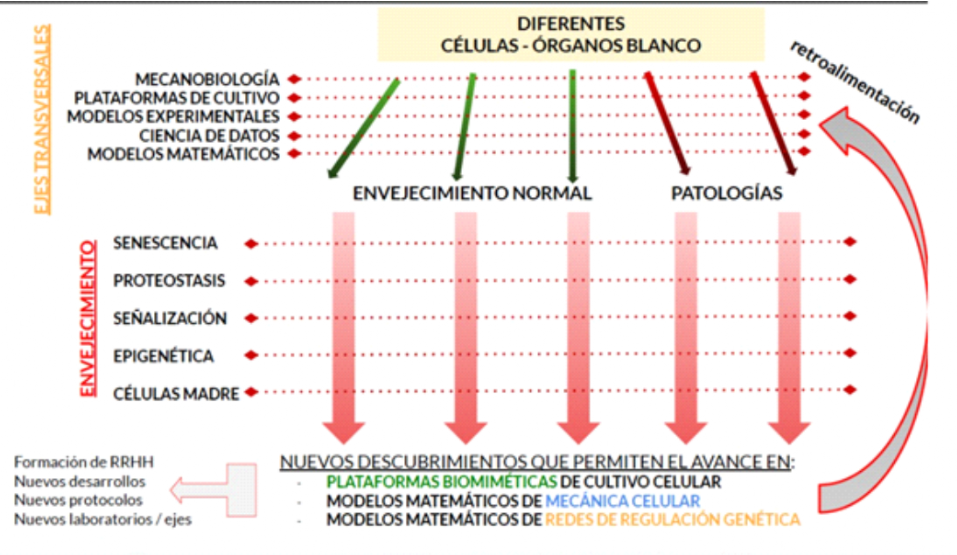

Plasticidad celular en el envejecimiento natural y patológico:
contexto y microambiente en la decisión celular
El envejecimiento es un proceso degenerativo progresivo y multifactorial que, generalmente, se caracteriza por una pérdida gradual de los mecanismos homeostáticos que mantienen la estructura y función de los tejidos, lo cual conlleva a un mayor riesgo de desarrollar una amplia variedad de enfermedades crónicas. Por sí mismos, ningún mecanismo o vía individual explica completamente el deterioro funcional asociado a la edad, sino que es la conjunción interrelacionada de cambios moleculares y celulares progresivos que se acumulan y que incluyen el acortamiento de los telómeros, la disfunción mitocondrial, la inestabilidad genómica, el agotamiento de las células troncales, las alteraciones epigenéticas, la pérdida de proteostasis, la detección desregulada de nutrientes, la senescencia celular y alteraciones en la comunicación intercelular, mismas que fueron definidas en el artículo cardinal de López-Otín et al. 2013 como las 9 características del envejecimiento.
Debido a que la pérdida gradual en el balance de los mecanismos de reparación producen en la vejez una acumulación de daño celular que conlleva a la aparición de enfermedades, entender estos procesos y encontrar vías comunes en diferentes órganos (pulmón, hígado, hipófisis), nos permitiría recopilar evidencia que ayude a comprender los procesos patológicos, tales como: enfermedades crónicas del envejecimiento, como la fibrosis en diferentes órganos, los síndromes .
neurodegenerativos, metabólicos, la mayoría de los cánceres y las enfermedades cardiovasculares, sino además sobre su posible proceso antes de la vejez. Esto posibilitaría formular modelos tales como microdispositivos de cultivo celular para su estudio.
Las nueve características del envejecimiento
Acortamiento de los telómeros
Los telómeros son secuencias compuestas por repeticiones TTAGGG localizadas al final de los cromosomas cuya función principal es estabilizar la integridad de los cromosomas. La longitud de los telómeros disminuye linealmente en proporción al número de divisiones celulares (O'Sullivan & Karlseder, 2010). Los telómeros disfuncionales, causados por su acortamiento, pueden provocar una respuesta de daño al ADN que conlleva a la pérdida de la proliferación celular y a la senescencia o la apoptosis.
En los últimos 20 años, numerosas evidencias han demostrado que el excesivo acortamiento de los telómeros se asocia con el desarrollo de enfermedades crónico degenerativas, incluyendo fibrosis progresiva en varios órganos como la fibrosis pulmonar idiopática (Pardo & Selman, 2021), enfermedad cardiovascular caracterizada por hipertrofia de cardiomiocitos y falla cardíaca (Anderson et al, 2019), fibrosis hepática (Barnard et al, 2019), y fibrosis renal (Saraswati et al, 2021).
Disfunción mitocondrial
Las mitocondrias son compartimentos subcelulares dinámicos y multifuncionales que forman un retículo sofisticado e interconectado. A medida que la célula envejece, sus mitocondrias acumulan anomalías que incluyen alteraciones morfológicas, reducción de la biogénesis, menor número de copias de ADNmt y aumento en sus mutaciones, lo que lleva a una falla funcional de la capacidad de la cadena respiratoria y la producción de ATP (Spinelli et al, 2018). En apoyo a la interconectividad de las características del envejecimiento, se ha demostrado que el acortamiento de los telómeros y la disfunción mitocondrial resultan en senescencia celular mientras que esta última afecta la remoción de las mitocondrias disfuncionales (Lee et al, 2021).
La disfunción mitocondrial está presente en muchas enfermedades relacionadas con la edad incluyendo fibrosis en diferentes órganos, donde desempeña un papel crítico (Massart et al, 2022; Kitai et al, 2021; Mora et al; Jian et al, 2021).
Senescencia celular
La senescencia celular es un fenotipo heterogéneo que depende del tipo de célula y del contexto, y es definida como la pérdida irreversible de la capacidad proliferativa, acompañada de resistencia a la apoptosis y la secreción de numerosos mediadores incluyendo citocinas, quimiocinas, factores de crecimiento y metaloproteasas de matriz, en un proceso conocido como fenotipo secretorio asociado a senescencia (SASP por sus siglas en inglés). La presencia de células senescentes es relativamente rara en organismos jóvenes, pero se acumulan con la edad en varios órganos y tejidos, como la piel, el corazón, los pulmones, el bazo, los riñones y el hígado (Paramos-de-Carvalho et al 2021).
Existe evidencia que este proceso contribuye de manera fundamental al desarrollo de fibrosis en diferentes órganos, aunque en determinadas circunstancias puede desempeñar un papel anti-fibrótico (Muñoz-Espín & Serrano, 2014; Paramos-de-Carvalho et al 2021).
Inestabilidad genómica
La integridad y la estabilidad del ADN se ven constantemente desafiadas por agresiones físicas, químicas y biológicas exógenas, así como por alteraciones endógenas, como errores en la replicación del ADN, hidrólisis espontánea y especies reactivas de oxígeno (Wen et al, 2021). Para contrarrestar estas amenazas a la estabilidad del genoma, las células desarrollaron sistemas especiales de reparación del ADN que se dirigen a la cadena de ADN no dañada en un dúplex para eliminar las bases de ADN regulares no coincidentes. Las lesiones del ADN tienden a acumularse con la edad en las células que no se dividen. Los efectos genotóxicos pueden empeorar por la escisión aberrante de la base no dañada, que inicia un ciclo inútil de reparación del ADN o genera mutaciones en la cadena de ADN no dañada (Talhaoui et al, 2017). Es importante señalar que la replicación aberrante de los telómeros promueve su acortamiento y alteración funcional, la cual es una fuente importante de inestabilidad genómica (Stroik & Hendrickson, 2020) y causal de senescencia. La inestabilidad del genoma afecta el número y la función de las células del sistema inmune en individuos adultos mayores (Alt et al., 2013); lo que explica, al menos en parte, los niveles elevados de inflamación basal observados en los ancianos (Soria-Valles et al, 2017).
Agotamiento de las células troncales
A medida que las células madre envejecen, su capacidad de autorrenovación disminuye y su capacidad para mantener la homeostasis y regeneración de los órganos se ve afectada (López-Otín 2013).
El agotamiento de las células madre es el resultado de múltiples tipos de alteraciones asociadas al envejecimiento, que incluyen la acumulación progresiva de daños en el ADN, que no se repara (o se repara incorrectamente), el acortamiento de telómeros, la senescencia, la disminución de la proteostasis, la disfunción mitocondrial, el agotamiento proliferativo, alteraciones en la señalización extracelular, y la remodelación epigenética (Picerno et al, 2021). Estos mecanismos son comunes a los que ocurren en las células diferenciadas, pero el agotamiento de las células madre, o la pérdida cuantitativa y cualitativa en la función de estas células con el tiempo, tiene un impacto marcadamente más importante en el envejecimiento de los tejidos en comparación con las células diferenciadas. Entre otros efectos, el agotamiento de las células madre altera los procesos de regeneración y favorece la remodelación fibrótica.
Alteraciones epigenéticas
La epigenética, que incluye la metilación del ADN, la modificación de histonas, la remodelación de la cromatina y el ARN no codificante, representa un mecanismo que influencia la expresión de genes sin cambiar la secuencia de ADN subyacente. El resultado final de los cambios epigenéticos durante el envejecimiento es la alteración de la accesibilidad local al material genético, lo que lleva a la expresión génica aberrante, la reactivación de transposones y la inestabilidad genómica (Pal & Tyler, 2016).
La maquinaria responsable de mantener los patrones normales de metilación del ADN se desregula gradual y estocásticamente con la edad (epigenetic drift) (Issa, 2014). Estos cambios son bidireccionales (hipermetilaciones e hipometilaciones) con errores aleatorios en el mantenimiento de la metilación, probablemente porque la fidelidad de transmisión de los patrones epigenéticos es variable en todo el genoma. Diversos estudios han demostrado que la metilación del ADN es crítica en la patogénesis de la fibrosis, lo que contribuye a una morbilidad y mortalidad significativas. La metilación aberrante del ADN puede silenciar o activar los patrones de expresión génica que impulsan el proceso de fibrosis (Zhang et al, 2017).
Por otro lado, dadas sus versátiles funciones en la regulación de la expresión génica, tanto los miRNAs como los lncRNAs controlan múltiples procesos celulares y moleculares, los que se desregulan durante el envejecimiento e influyen en procesos patológicos como la fibrosis de diversos órganos (Ghafouri-Fard et al, 2021). Si estos cambios epigenéticos contribuyen al envejecimiento o son una consecuencia de las vías de señalización que cambian o se activan, no se sabe con precisión, pero es probable que sean parte de un círculo vicioso que en última instancia conduce al daño tisular, inflamación, fibrosis y enfermedad.
Pérdida de proteostasis
La red de proteostasis regula la síntesis, el plegamiento y la degradación de proteínas y es crítica para la salud y la función de todas las células. Esta red se ha estudiado ampliamente en el contexto del envejecimiento y las enfermedades relacionadas con la edad, y la pérdida de proteostasis se considera un importante contribuyente a muchos trastornos asociados con el envejecimiento (Labbadia & Morimoto, 2015.
En particular, la vía de la autofagia que es fundamental en el mantenimiento de la proteostasis celular a través de la degradación selectiva de las proteínas mal plegadas y por lo tanto propensas a la agregación, ha sido involucrada en la patogénesis de múltiples enfermedades degenerativas incluyendo la fibrosis (Balch et al, 2014; Mizushima et al, 2018, Cabrera et al, 2015; Maciel et al, 2018; Romero et al, 2016).
Detección desregulada de nutrientes
El eje somatotrófico en mamíferos comprende la hormona del crecimiento (GH), producida por la hipófisis anterior, y su mediador secundario, el factor de crecimiento similar a la insulina (IGF-1), producido en respuesta a la GH por muchos tipos de células. Diversos estudios han demostrado que la GH aumenta la sensibilidad a los agentes dañinos para el ADN y reduce su reparación (Bartke A et al, 2021).
Los estudios en fibrosis son escasos, pero de manera interesante se ha observado que la GH aumenta la expresión de colágena en fibroblastos (Householder et al, 2018). Asimismo, se ha demostrado que la inhibición del receptor de la hormona liberadora de GH inhibe la inflamación y fibrosis pulmonar inducida por bleomicina en ratones (Zhang C et el, 2019). Igualmente, la deficiencia de GH se asocia con una mayor prevalencia de hígado graso y esteatohepatitis no alcohólica que se caracteriza histológicamente por inflamación, necrosis y fibrosis, además de esteatosis (Takahashi Y. 2017).
Por otro lado, la expresión y/o señalización de IGF-1 se encuentra incrementada en pacientes con FPI, sarcoidosis en etapa tardía, silicosis, y fibrosis pulmonar asociada con enfermedades autoinmunes (Krein & Winston, 2002).
Alteraciones en la comunicación intercelular
El envejecimiento también implica cambios a nivel de la comunicación intercelular, ya sea endocrina, neuroendocrina o neuronal (Lopez-Otín et al, 2013). En general, las vías de señalización tienden a desregularse durante el envejecimiento a medida que aumentan el número de células senescentes y la composición del entorno peri y extracelular cambia, afectando así las propiedades mecánicas y funcionales de todos los tejidos. Algunas de estas vías favorecen la inflamación (liberación anormal de citocinas) y la fibrosis, por ejemplo, a través del sistema renina-angiotensina, cuya desregulación participa en la patogénesis de la fibrosis de varios órganos, incluyendo pulmón, hígado, corazón y piel (AlQudah M et al, 2020).
Adicionalmente a estas nueve características del envejecimiento, recientemente hemos propuesto que la pérdida de integridad y rigidez de la matriz extracelular provoca alteraciones en las señales biofísicas tisulares alterando numerosos procesos celulares fisiológicos, como el posicionamiento y la forma espacial de las células, la expresión génica, la adhesión celular, la proliferación, la diferenciación y la migración lo cual desempeña un papel importante en diversas patologías, particularmente en la fibrosis asociada al envejecimiento (Selman & Pardo, 2021).
Propusimos que una interacción compleja entre la matriz extracelular rígida asociada al envejecimiento y diferentes células residentes da como resultado un nicho mecánicamente alterado que orquesta este proceso patológico. Así, la acumulación y rigidez de la matriz extracelular, a menudo vista como una consecuencia de la fibrosis, desempeña un papel crítico en el inicio y progresión de la fibrogénesis al promover la mecano activación de diferentes vías de señalización profibróticas. Una matriz más rígida activa varios bucles de retroalimentación que amplifican la respuesta fibrótica incluyendo, entre otros, la liberación de factores de crecimiento, principalmente TGF-β, y la translocación nuclear de YAP y TAZ que activan genes profibróticos. En este contexto, las células no solo responden al estrés mecánico por sí mismas con cambios en la proteostasis, la función mitocondrial, el metabolismo y la arquitectura nuclear, entre otros, sino que también generan múltiples señales para comunicarse con las células vecinas, amplificando la respuesta fibrótica. Así, la rigidez de la matriz desempeña un papel importante a través de su profundo efecto sobre las propiedades mecano biológicas de los tejidos (Selman & Pardo, 2021).
Envejecimiento y fibrosis
La fibrosis es un proceso evolutivamente conservado diseñado para la reparación de tejidos gravemente lesionados, cuando los mecanismos regenerativos han sido excedidos. La fibrosis es la consecuencia patológica final y común de muchos padecimientos crónicos en los que los desencadenantes específicos de la enfermedad inician variadas lesiones en el tejido que pueden terminar en una respuesta inflamatoria que no se resuelve, o en la activación aberrante de las células residentes, como las células epiteliales o el endotelio microvascular.
La desregulación del proceso de cicatrización resulta en la activación de un programa de remodelación fibrótica persistente e incontrolada con la sobreexpresión de un conjunto de vías de señalización fibrótica que incluye TGFβ y otros factores de crecimiento, señalización de Hedgehog y WNT, y varios bucles de activación auto-amplificadores, los cuales participan en virtualmente todos los procesos de fibrosis. Asimismo, e independientemente de los eventos iniciadores, una característica común de todas las enfermedades fibróticas es la migración y proliferación de células mesenquimales con la consecuente activación de miofibroblastos, que son mediadores cruciales de la remodelación del tejido fibrótico.
El proceso fibrótico, caracterizado por una producción excesiva y una acumulación caótica de componentes de la matriz extracelular, principalmente colágenas fibrilares, da como resultado la distorsión de la arquitectura tisular con pérdida de función (Rockey et al. 2015; Distler et al. 2019).
Aunque la fibrosis puede ocurrir a cualquier edad, es claramente más frecuente en los adultos mayores. En el caso del pulmón, la fibrosis pulmonar idiopática (FPI), la forma más agresiva de fibrosis pulmonar, está asociada principalmente al envejecimiento, siendo poco frecuente en individuos menores de 50 años, y aumentando notablemente después de los 60 años (Mora et al. 2017). Además, en otras enfermedades pulmonares intersticiales, como la neumonitis por hipersensibilidad y la asociada a la artritis reumatoide, la respuesta fibrótica aumenta en frecuencia y empeora con la edad (Costabel et al. 2020; Spagnolo et al. 2018).
Envejecimiento y plasticidad celular
La plasticidad celular es un problema multiparamétrico, especialmente en el contexto del envejecimiento. Mientras que un organismo joven logra hacer frente a las perturbaciones internas y externas para preservar las funciones de los órganos y tejidos utilizando procesos de reparación y regeneración, las células envejecidas no pueden manejar correctamente el daño, siendo así más propicias al desarrollo de enfermedades.
El envejecimiento involucra procesos o alteraciones en las características celulares y tisulares (senescencia, proteostasis, señalización epigenética y células madre) que al ser estudiados desde un enfoque integral pueden favorecer una comprensión holística del envejecimiento en diferentes células-órganos blanco. Para ello, se puede plantear una estrategia de abordaje con base en ejes transversales, tales como mecanobiología, plataformas de cultivo, modelos experimentales, ciencias de datos y modelos matemáticos.
Si bien el conocimiento generado de esta manera sobre el envejecimiento en sí mismo es de relevancia, resulta idóneo para el abordaje asertivo y oportuno de problemas patológicos relevantes y/o crónicos (Figura 1). Es decir, la información generada en este proyecto, busca no sólo entender cómo la plasticidad celular se asocia a los procesos de envejecimiento, sino además cómo esto contribuye al desarrollo de patologías y, por lo tanto, nos permitirá comprender algunas de los mecanismos involucrados en una respuesta normal/patológica de una célula a diferentes perturbaciones externas o internas. Estos mecanismos aún no son del todo conocidos porque su estudio requiere integrar varias señales que colaboran o compiten en procesos celulares y causan plasticidad celular: 1) el contexto celular, micro-ambiente y organización en tejidos y órganos, dependiendo de las señales que necesitan ser integradas, 2) Los procesos celulares modificados por el envejecimiento.
Esto nos permitirá elaborar vínculos mecanicistas entre el envejecimiento y la enfermedad crónica; y recomendar vías para identificar y desarrollar terapias, modelos, o enfoques preventivos para enfermedades asociadas a la edad.

Figura 1. Esquema
general de integración del proyecto plasticidad celular en el envejecimiento
natural y patológico: contexto y microambiente en la decisión celular.
Proyectos programados para los 3 siguientes años si
CONACYT aporta recursos
Envejecimiento como un
proceso integral
“Caracterización celular y molecular del envejecimiento del pulmón de
ratón (Mus musculus)”.
Objetivo principal: Describir las características genéticas, celulares
y tisulares, asociadas al envejecimiento natural de ratones C57Bl6, como:
morfología tisular, porcentaje de células senescentes, porcentaje de células
troncales, flujo autofágico, estrés de retículo endoplásmico, disfunción
mitocondrial, expresión génica y modificaciones epigenéticas.
Proteostasis
“Impacto
de la rigidez de la matriz extracelular en la actividad autofágica y la
respuesta UPR en células epiteliales y hepatocitos”.
Objetivo
principal: Evaluar si cambios en la rigidez de la matriz extracelular inducen
estrés del retículo endoplásmico, cambios en la actividad de la vía UPR, en la
actividad autofágica, en el tráfico vesicular y en la secreción de exosomas en
células epiteliales de pulmón e hígado.
“Evaluación de la
inducción de autofagia para promover la regeneración pulmonar durante el
envejecimiento”
Objetivo principal: Evaluar si la inducción de
autofagia promueve la regeneración pulmonar por medio de la formación de organoides
con un modelo en ratón de envejecimiento acelerado (Zmpste24 -/-).
Disfunción mitocondrial
“Participación de
la disfunción mitocondrial en la resistencia de los fibroblastos a la apoptosis
en la fibrosis pulmonar experimental y humana”.
Objetivo principal:
estudiar en el modelo de bleomicina el potencial terapéutico del fármaco IFC305
mediante la cuantificación del consumo de oxígeno, producción de ATP, contenido
de hidroxiprolina y análisis de morfología pulmonar[1] .
Senescencia
“Papel de ZNF365 en
la senescencia de fibroblastos y células epiteliales de pulmón”.
Objetivo principal:
Evaluar los efectos funcionales asociados a la expresión de ZNF365 en
fibroblastos y células epiteliales y su posible implicación en la senescencia
celular y examinar el efecto de su homólogo, Zfp365, en la respuesta pulmonar
fibrosante inducida por bleomicina[2] .
Alteraciones epigenéticas
“Regulación
epigenética de la proteína cinasa asociada a muerte (Death-Associated Protein Kinase 1 (DAPK1) en fibroblastos derivados
de pulmones con fibrosis pulmonar idiopática”.
Objetivo principal:
Analizar si el silenciamiento o sobre-expresión de DAPK1 afecta su fenotipo
profibrosante y si participa en procesos involucrados en la fibrosis como la
autofagia y la muerte celular en fibroblastos derivados de pulmones humanos
normales y de pacientes con fibrosis pulmonar idiopática.
“Papel de la
desacetilasa 3 (HDAC3) en la regulación de genes asociados a fibrosis en
fibroblastos y células epiteliales de pulmón”.
Objetivo principal:
Evaluar la expresión, localización y la influencia funcional de HDAC3 en la
remodelación de cromatina y en la expresión de genes asociados a la patogénesis
de la fibrosis pulmonar idiopática, en fibroblastos pulmonares y células del epitelio
alveolar, así como la influencia de la rigidez de la matriz[3] .
“Impacto de los
miRNAs en el fenotipo patológico de fibroblastos pulmonares de pacientes con
neumonitis por hipersensibilidad fibrótica”.
Objetivo principal:
Identificación in silico de miRNAs y
genes asociados con neumonitis por hipersensibilidad y evaluar los efectos de
la pérdida o ganancia de miRNAs sobre el fenotipo celular asociado al
desarrollo y progresión de la fibrosis en neumonitis por hipersensibilidad.
“Participación de Homer1
en el fenotipo del fibroblasto pulmonar”.
Objetivo principal:
evaluar los efectos funcionales de Homer1 en proliferación, migración,
apoptosis y marcadores de senescencia en fibroblastos pulmonares humanos[4] .
Mecanotransducción
“Generación de microplataformas de cultivo de condiciones físicas y
bioquímicas controladas:”
Objetivo principal: evaluar la respuesta celular a cambios mecánicos en
los modelos fisiopatológicos de pulmón.
“Papel de los mecanosensores Piezo1 y Piezo2 en la fibrosis pulmonar
experimental y humana.
Objetivo principal:
Determinar si los canales catiónicos Piezo1 y Piezo2 en fibroblastos son
mediadores clave de la señalización mecánica asociada a la rigidez de la matriz
extracelular y al desarrollo y progresión de la fibrosis”.
“Efecto de la rigidez y composición de la
matriz extracelular en la regulación epigenética de metaloproteinasas de matriz
(MMPs) en fibroblastos y células epiteliales de pulmón”.
Objetivo principal:
Evaluar el impacto de la rigidez de la matriz y la composición de los sustratos
sobre los mecanismos epigenéticos que regulan la expresión de MMPs.
“Generación de la
plataforma microfluídica tipo órgano-en-un-chip para el modelo de hígado”
Objetivo principal:
establecer el primer chip microfluídico funcional de tipo órgano en un chip en
el país, basado en la formación del parénquima-endotelio y demostrar la
funcionalidad del chip a través de la exploración de su capacidad de
destoxificación mediante la expresión de citocromos.
“Microplataforma
biomimética para la evaluación de esfuerzos contráctiles”
Objetivo principal:
Evaluar la función contráctil de células murales (pericitos y músculo) durante
la madurez y el envejecimiento.
Bioinformática
“Análisis de datos
de estudios de secuenciación de ARN en células individuales (single-cell) en enfermedades fibrosantes
pulmonares y envejecimiento”
Objetivo principal:
Este proyecto constituye la segunda etapa en la construcción de la base de
datos PulmonDB. Previamente habíamos incluido datos de microarreglos y RNAseq
en tejidos, pero con las nuevas tecnologías de single-cell RNAseq, nos interesa realizar análisis más integrados
con resolución que permitan entender mejor los procesos fisiológicos y patológicos.
“Análisis
proteómico de un enriquecido de mitocondrias de fibroblastos pulmonares sanos y
fibroblastos fibróticos expuestos a hipoxia”
Objetivo principal:
Analizar la expresión diferencial de proteínas obtenidas a partir de
mitocondrias purificadas en fibroblastos sanos y de pacientes con fibrosis
pulmonar idiopática en condiciones de hipoxia y normoxia, con el fin de
identificar un posible objetivo terapéutico.
Referencias
AlQudah M, Hale TM,
Czubryt MP. Targeting the renin-angiotensin-aldosterone system in fibrosis.
Matrix Biol. 2020; 91-92:92-108.
Anderson R, Lagnado
A, Maggiorani D, Walaszczyk A, Dookun E, Chapman J, Birch J, Salmonowicz H,
Ogrodnik M, Jurk D, Proctor C, Correia-Melo C, Victorelli S, Fielder E,
Berlinguer-Palmini R, Owens A, Greaves LC, Kolsky KL, Parini A, Douin-Echinard
V, LeBrasseur NK, Arthur HM, Tual-Chalot S, Schafer MJ, Roos CM, Miller JD,
Robertson N, Mann J, Adams PD, Tchkonia T, Kirkland JL, Mialet-Perez J,
Richardson GD, Passos JF. Length-independent telomere damage drives
post-mitotic cardiomyocyte senescence. EMBO J. 2019 Mar 1;38(5):e100492.
Balch WE, Sznajder
JI, Budinger S, Finley D, Laposky AD, Cuervo AM, Benjamin IJ, Barreiro E,
Morimoto RI, Postow L, Weissman AM, Gail D, Banks-Schlegel S, Croxton T, Gan W.
Malfolded protein structure and proteostasis in lung diseases. Am J Respir Crit
Care Med. 2014; 189:96-103.
Barnard A, Moch A,
Saab S. Relationship between Telomere Maintenance and Liver Disease. Gut Liver
2019; 13:11-15.
Bartke A, Hascup E,
Hascup K, Masternak MM. Growth Hormone and Aging: New Findings. World J Mens
Health. 2021; 39:454-465.
Berk BC, Fujiwara
K, Lehoux S, 2007. ECM remodeling in hypertensive heart disease. J Clin Invest
2007; 117:568-575.
Cabrera S, Maciel
M, Herrera I, Nava T, Vergara F, Gaxiola M, López-Otín C, Selman M, Pardo A.
Essential role for the ATG4B protease and autophagy in bleomycin-induced
pulmonary fibrosis. Autophagy. 2015; 11:670-684.
Costabel U,
Miyazaki Y, Pardo A, Koschel D, Bonella F, Spagnolo P, Guzman J, Ryerson CJ,
Selman M. 2020. Hypersensitivity pneumonitis. Nat Rev Dis Primers 2020; 6: 65.
Distler JHW, Györfi
AH, Ramanujam M, Whitfield ML, Königshoff M, Lafyatis R. Shared and distinct
mechanisms of fibrosis. Nat Rev Rheumatol 2019; 15:705-730.
Docherty MH, Baird
DP, Hughes J, Ferenbach DA. Cellular senescence and senotherapies in the
kidney: current evidence and future directions. Front Pharmacol 2020; 11:755.
Ghafouri-Fard S,
Abak A, Talebi SF, Shoorei H, Branicki W, Taheri M, Akbari Dilmaghani N. Role
of miRNA and lncRNAs in organ fibrosis and aging. Biomed Pharmacother. 2021
Nov;143:112132.
Householder LA,
Comisford R, Duran-Ortiz S, Lee K, Troike K, Wilson C, Jara A, Harberson M,
List EO, Kopchick JJ, Berryman DE. Increased fibrosis: A novel means by which
GH influences white adipose tissue function. Growth Horm IGF Res. 2018;
39:45-53.
Humphreys BD. 2018.
Mechanisms of renal fibrosis. Ann Rev Physiol 2018; 80: 309-326.
Issa JP. Aging and
epigenetic drift: a vicious cycle. J Clin Invest 2014; 124: 24-29.
Jiang M, Xie X, Cao
F, Wang Y. Mitochondrial Metabolism in Myocardial Remodeling and Mechanical
Unloading: Implications for Ischemic Heart Disease.
Front Cardiovasc
Med 2021; 8:789267.
Kitai Y, Nangaku M,
Yanagita M. Aging-Related Kidney Diseases. Contrib Nephrol 2021; 199:266-273.
Krein PM, Winston
BW. Roles for insulin-like growth factor I and transforming growth factor-beta
in fibrotic lung disease. Chest. 2002; 122(6 Suppl):289S-293S.
Labbadia J,
Morimoto RI. The biology of proteostasis in aging and disease
Annu Rev Biochem
2015; 84:435-464.
Lee YH, Park JY,
Lee H, Song ES, Kuk MU, Joo J, Oh S, Kwon HW, Park JT, Park SC. Targeting
Mitochondrial Metabolism as a Strategy to Treat Senescence. Cells 2021;
10:3003.
Maciel M,
Hernández-Barrientos D, Herrera I, Selman M, Pardo A, Cabrera S. Impaired
autophagic activity and ATG4B deficiency are associated with increased
endoplasmic reticulum stress-induced lung injury. Aging (Albany NY). 2018;
10:2098-2112.
Massart J, Begriche
K, Hartman JH, Fromenty B. Role of Mitochondrial cytochrome P450 2E1 in Healthy
and Diseased Liver. Cells 2022; 11:288.
Mizushima N. A
brief history of autophagy from cell biology to physiology and disease. Nat
Cell Biol. 2018; 20:521-527.
Mora AL, Bueno M,
Rojas M. Mitochondria in the spotlight of aging and idiopathic pulmonary
fibrosis. J Clin Invest 2017; 127:405-414.
Mora AL, Rojas M,
Pardo A, Selman M. Emerging therapies for idiopathic pulmonary fibrosis, a
progressive age-related disease. Nat Rev Drug Discov 2017; 16: 810.
Muñoz-Espín D,
Manuel Serrano M. Cellular senescence: from physiology to pathology. Nat Rev Mol
Cell Biol 2014; 15:482-496.
Noureddin M, Yates
KP, Vaughn IA, Neuschwander-Tetri BA, Sanyal AJ, McCullough A, Merriman R,
Hameed B, Doo E, Kleiner DE, Behlingm C, Loomba R, NASH CRN. Clinical and
histological determinants of nonalcoholic steatohepatitis and advanced fibrosis
in elderly patients. Hepatology 2013; 58: 1644-1654.
O'Sullivan RJ,
Karlseder J. Telomeres: protecting chromosomes against genome instability. Nat
Rev Mol Cell Biol 2010; 11:171-181.
Pal S, Tyler J.
Epigenetics and aging. Science advances 2016; 2:e1600584.
Paramos-de-Carvalho
D, Jacinto A, Saúde L. The right time for senescence. Elife 2021; 10:e72449.
Pardo A, Selman M.
The interplay of the genetic architecture, aging, and environmental factors in
the pathogenesis of idiopathic pulmonary fibrosis. Am J Respir Cell Mol Biol
64:163-172, 2021.
Picerno A, Stasi A,
Franzin R, Curci C, di Bari I, Gesualdo L, Sallustio F. Why stem/progenitor
cells lose their regenerative potential. World J Stem Cells 2021; 13:1714-1732.
Poynard T, Lebray
P, Ingiliz P, Varaut A, Varsat B, Ngo Y, Norha P, Munteanu M, Drane F, Messous
D, Bismut FI, Carrau JP, Massard J, Ratziu V, Giordanella JP. Prevalence of
liver fibrosis and risk factors in a general population using non-invasive
biomarkers (FibroTest). BMC Gastroenterol 2010; 10: 40.
Rockey DC, Bell PD,
Hill JA. Fibrosis–a common pathway to organ injury and failure. N Engl J Med
2015; 372:1138-1149.
Romero Y, Bueno M,
Ramirez R, Álvarez D, Sembrat JC, Goncharova EA, Rojas M, Selman M, Mora AL,
Pardo A. mTORC1 activation decreases autophagy in aging and idiopathic
pulmonary fibrosis and contributes to apoptosis resistance in IPF fibroblasts.
Aging Cell. 2016; 15:1103-1112.
Saraswati S,
Martínez P, Graña-Castro O, Blasco MA. Short and dysfunctional telomeres
sensitize the kidneys to develop fibrosis. Nature Aging 2021; 1:269-283.
Selman M, Pardo A.
Fibroageing: An ageing pathological feature driven by dysregulated
extracellular matrix-cell mechanobiology. Ageing Res Rev 2021; 70:101393.
Soria-Valles C,
López-Soto A, Osorio FG, López-Otín C. Immune and inflammatory responses to DNA
damage in cancer and aging. Mech Ageing Dev 2017; 165(Pt A):10-16.
Spagnolo P, Lee JS,
Sverzellati N, Rossi G, Cottin V. The lung in rheumatoid arthritis: focus on
interstitial lung disease. Arthritis Rheumatol 2018; 70:1544-1554.
Spinelli J.B.,
Haigis M.C. The multifaceted contributions of mitochondria to cellular
metabolism. Nat. Cell Biol 2018; 20:745-754.
Stroik S,
Hendrickson EA. Telomere replication-When the going gets tough. DNA Repair
(Amst) 2020; 94:102875.
Sweeney M, Corden
B, Cook SA. Targeting cardiac fibrosis in heart failure with preserved ejection
fraction: mirage or miracle? EMBO Mol Med 2020; 12: e10865,
Takahashi Y. The
Role of Growth Hormone and Insulin-Like Growth Factor-I in the Liver. Int J Mol
Sci. 2017; 18(7):1447.
Talhaoui I,
Matkarimov BT, Tchenio T, Zharkov DO, Saparbaev MK. Aberrant base excision
repair pathway of oxidatively damaged DNA: Implications for degenerative
diseases. Free radical biology & medicine 2017; 107:266-277.
Tang X, Li PH, Chen
HZ. Cardiomyocyte senescence and cellular communications within myocardial
microenvironments. Front Endocrinol (Lausanne) 2020; 11: 280.
Udomsinprasert W,
Sobhonslidsuk A, Jittikoon J, Honsawek S, Chaikledkaew U.
Cellular senescence
in liver fibrosis: Implications for age-related chronic liver diseases. Expert
Opin Ther Targets 2021; 25:799-813.
Wen J, Wang Y, Yuan
M, Huang Z, Zou Q, Pu Y, Zhao B, Cai Z. Role of mismatch repair in aging. Int J
Biol Sci 2021; 17:3923-3935.
Zhang X, Hu M, Lyu
X, Li C, Thannickal VJ, Sanders YY. DNA methylation regulated gene expression
in organ fibrosis. Biochim Biophys Acta Mol Basis Dis. 2017; 1863:2389-2397.
IFC305
no sirve como tratamiento en el modelo de fibrosis inducida por bleomicina, al
menos inyectándolo cada tercer día. Erika insiste y está viendo si el compuesto
funciona con inyecciones diarias porque in vitro sí evita el aumento de ACTA2,
COL1A1 y COL3A1 después de estimular con TGFb. Si sale se podría modificar en
ese sentido. Si no mejor borrarlo.
concluído
publicado
No sé
si el mejor tema para Homer sea "alteraciones epigenéticas". Sí el
origen de estudiarlo fue porque se altera la metilación y se sobreexpresa, pero
los resultados que se tienen ya no están relacionados con la metilación.